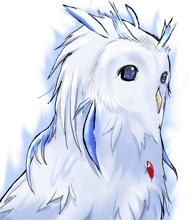

シルバーセカンド開発日誌
2008年11月
■
2008-11-26 (水) フリーゲームと同人活動▼system[DA,BA]というカードゲーム企画にて、一部のカードに
シルフェイド見聞録・幻想譚の2作品からキャラやネタを
採用してくださっています！
フリーゲームは同人の世界とはちょっと遠い世界だと思ってたので、
取り上げてくださったことが意外で、とても嬉しいです、
ありがとうございます！
system[DA,BA] 公式サイト （BackFire 様/ｱｰｶｲﾌﾞ）
イラストがどんなのかは分かりませんが、
参加イラストレーターさんの中にうちのお絵かき掲示板でも
お世話になっている方々の名前も多く見るので、
その方々がカード絵を描いてくださったんだと思います。
ちゃんとした紙（かプラスチック）媒体のカードゲームのようです。
たださすがに尾道ラーメン食ってるとこからは場所が遠いので
私は見守っているだけです、ウフフ。
ご興味のある方は11/30のTGF2008会場まで
移動頑張ってみてください！
っていうか、何ですかこのサイトの全体的に半獣系でまとまってて
個人的大興奮なトップ絵。下にいる緑髪の人が個人的にツボです。
で、ここからは、個人的な考えのお話です。
テーマは「フリーゲームと同人の違い」について！
「フリーゲームは同人とはちょっと遠い世界かな」と言いましたが、
本来、同人活動とは
「同じ目的や趣味を持った人が集まったり創作したりする」
って意味なので、
「フリーゲームは果たして同人の一部に入るのかなあ？」
と個人的に思っているところがありました。
「え？フリーゲームも同人ゲームじゃん」
っていう方も結構いらっしゃるんですけれど、
同人＝アマチュアって意味とは違う気がするんです。
とりあえず、ここでは
「実体がある物を作って皆のいる場（特にコミケ？）で配布する」
のを同人（ソフト）、
「オンラインだけで配布するゲーム」
をフリーウェア（有料ならシェアウェア）
と呼んで区別することにします。
で、両者のどこが違うのか、個人的に思ったことを
以下に残しておこうと思います。
もっとも私自身、同人についてよく知らないので、
フリーゲーム側から見た意見が中心ですけれど！
【フリーゲームと同人の違い】
同人の世界は、本来の意味通りだと同じ趣味を持った人で楽しんだり、
創作物を集合させること（合同誌でもコミケ全体でも）がメイン、という
印象を受けるのですが、それに対してフリーゲームの世界は、
個人個人が何かしらの分野で理想を求めて
各自勝手に作ることが目的であって、
同じ趣味の人を募ったり、集まったりすることは少ないはずです。
したがって、開発者さん同士の交流のきっかけというのも、
同人活動に比べると極めて少ないんじゃないかなと思っています。
何よりこのインターネット時代においてなお、フリーゲームの
開発者さん同士でお互いの作品について語るというシンプルな交流すら
実は同人活動に比べても案外少ないんじゃないでしょうか。
なぜなら、フリゲ開発者の方は、
みんな自分の理想系のゲームを生み出そうと真剣な人が多くて、
特に「作品の面白さ」を追求して作っている開発者さんは
「（同じジャンル内では）自分の作ったゲーム以外は
全部つまらんんんんん！」
と、少なくとも心の中では言い切れる自信があると思うんです。
というかそのつもりで作ってないとウソだ！
（※念のため、そんな人ばかりではありません）
そんな世界で、超真剣な開発者さんが面識のない人のゲームに対して
たとえば自サイトやブログで
「××さんのゲーム面白い！」とも軽々しく言わないだろうし、
その開発者さんからするとすでにあらゆる作品に
満足していないわけですから、
わざわざ特定作品だけ名指しして、自サイトやブログで
「××さんのゲームはダメだ！」と言うこともない気がします。
よって、フリーゲーム制作者さん同士は
世界が遠い（ジャンル・規模違い）場合を除き、
見知らぬ相手の作品に関しては、
あまり話題にしないんじゃないかなあと思うのです。
でも、フリーゲーム作る人同士って、基本的に自分の作った
ゲーム周りからしかお互いの接点が生まれないわけで、
そこに触れられない場合は互いに何も言えないわけですよ！
その結果、本気なフリーゲーム開発者さんたちは、
お互い硬派にほどよい距離を維持したまま、自分自身の目指す道を、
それぞれ、今もただひたすら歩み続けているのではないでしょうか。
フリーゲーム開発に関わるコミュニティをあまり見ない気がするのは、
そんな自分の理想を追い求める人たちの気質ゆえに
集まる必要がないからなのかな、と思ってます。
もちろん、開発者さんの中には
「みんな集まって仲良くやろうよ！」ってのが
大好きな人もいますから、そういう人が
接点になる事もあるかもしれません。
そういう世界で、たまたま誰かと仲良くなれたのなら、
それはとてもとても幸せなことだと思います。
損得から離れた世界でできた仲間や知り合いほど、
真に愛せる人たちはいないと思いますから。 ▼追記を開く▼
フリーウェアの世界は普通には見えないし、
基本的に金銭のやり取りも発生しないし、
それゆえ業者の人も手数料その他の利益を得られないために
ほとんど入って来ず、したがって大きな場で紹介されることもない、
という割と静かな世界です。
雑誌などのお金が発生するところに、
客寄せのタネとして載せてくださることがあったり、
有志の人が紹介サイトを立てて
専門で紹介してくださることはあるのですが、
仮に名を上げようと思った場合でも、
その近辺で紹介される事が限界なのです。
それゆえ、マスコミなどにも取り上げられる同人の世界と比べれば、
ものすごく小さな世界のように感じます。
実際、人数的にもフリーゲームの世界の方が小さいのかもしれません。
またゲームがレビューされる場合や宣伝する場合などでも、
コンシューマゲームなどと比べた場合、
配布する側も大々的にお金が使えないので
（そもそも無料の作品をお金を使って宣伝する意味がない）、
口コミと紹介以外の変な小細工が効かないという意味では、
すごく純粋な世界だと思います。
これが広告企業 対 ゲーム企業のやり取りだと、
広告費いっぱい出してくれる会社のゲームほど
融通したいかもしれませんが、無料の世界にはそれがありません。
基本的には、作品の差がそのまま
評価の差になるのは間違いないと思います。
無論、その評価がプレイヤーさんの好みで大きく変わるのも事実で、
だからこそ、多く人の作品を色々遊んでみていただきたいと思うのです。
またソフトの絵というか、
ゲームの外見にあまり期待していない人が比較的
多いのも嬉しいところです。
純粋に中身だけで勝負することできるわけですから！
でも最近は、フリーゲームでも
ちょっとは外見が求められているような気もしています。
作る人が増えたから、最低ラインが上がっちゃったのかな。
それと、遊んでもらえるチャンスや評価してくれる数が、
とても多いのはフリーゲームの大きな利点だと思っています。
「え、同人ソフト（ＣＤ媒体）はマイナーでも
普通に1作品1万本くらい売れるよ！？」
とか言われたらフリーゲームの利点も木っ端みじんですけれど！
正直、同人ソフト周りは何も知らないので、
何か間違っていた場合は申し訳ありません！
とにかくフリーゲームは、公開開始から
時間が経っても触れて貰えるチャンスが十分にあるので、
すんごい物を一本徹底的に創ることでフリーゲームの歴史に
名を残すことだって夢じゃないのではないかなと思っています。
もちろん、みんながみんな名を残すために作ってるわけではありません。
ただ、自分が「これが一番面白いんじゃないか」と思って作った結果が
広く認められたなら、やっぱり嬉しいじゃないですか！ うん！
そしてこの話に特にオチはありません！
とりあえず、今回はカテゴリが「その他」だったので、
自分が思ったフリーゲーム観を思うだけ全部書き連ねてみました！
こんなふんわりとした雑多な一つの初見も、
過去の歴史を見るにあたって何かお役に立てるかもしれません。
特にゲーム制作と関係ないこんなお話を長々と読んで下さった皆さん、
誠にありがとうございました。■
2008-11-22 (土) シル学トーテム紹介「アウル」▼おっ、アクションゲームツクールの発売日まであと3週間じゃん！
と思ったらだいぶ伸びてたウルフです。
気温0度とかもう…許して……寒い……さぶっ……ガタガ。
本日二つ目の記事です。ウディタ作品のダウンロード数などに
興味がある人は同じ日のもう一つ↑の記事もどうぞ。
今回はシルフェイド学院物語のトーテム紹介です。
ファング紹介のときも話した通り、トーテムは以下の3種に分かれています。
・獣系＝筋力・生命重視・戦闘型
・鳥系＝敏捷・知力重視、万能型
・かわいい系＝魅力重視・交流型
で、今回は鳥系トーテム「アウル」をご紹介！
色々名前のご意見を募っておいた後で申し訳ないのですが
やっぱりこの名前がしっくり来ました！

アウルはフクロウのトーテムです、幻想譚で言うところの
フェザーとスケイルを足して2で割ったようなポジション。
敏捷と知力重視で、割とどんなことにも
対応できますが決定力がありません。
例えば、シル学ではほとんどの公式試合中にフォースが使えないので、
敏捷と知力重視というのは物凄く微妙です。
中身は女性らしく好奇心旺盛で、知識に溢れる反面
自分で色々体験してみたい意志が強く、
特に人間には強い興味があります。
っていうと幻想譚プレイ済みの人には
何やらあのフラグが立ってる予感が
するかもしれませんが、割とその予定です。
ステータスは敏捷が最高で、知力・意志がまあまあ上がりやすく、
筋力や魅力はちょい低め、生命に難ありです。
書いててなんかスゲー使いにくいような気がしてきました。
生命が低いので、育成で体を使う
トレーニングを行うと頻繁に休息が必要になります。
戦闘では回避力と行動回数が自慢ですが、攻撃力がやや低いので
頭を使ってスキルを選択しなければ、勝つことは難しいでしょう。
しかし試験（あるのかな）では、
自慢の知力で何ら苦労せず突破できるでしょう。
またフクロウの暗視能力で
探索が有利に進められるかもしれませんが、
筋力が低いのでたくさんのアイテムを持って帰ることはできません。
シミュレーション編では知力を活かした書類整理の素早さで、
1ターンに多くの指示ができるかもしれません。
そういう意味の素早さもあります。
開発や調合などのアイテム生成でも、
多くのレシピを習得することができるでしょう。
いつも優しく思慮深いので、アドベンチャーパートでは
変な選択肢は推奨しませんが、時にやや消極的になるかもしれません。
そのため、押しが必要な場面では
間違った選択肢を推奨する可能性があります。
といった具合です。これらは全部青写真（妄想）です。
だってまだシステム作ってる段階なんですもん！！！
以下はオマケ話。 ▼追記を開く▼
ちなみに今はメニュー画面（ステータス欄とかアイテム欄）作ってます！！！
マウス操作のメニュー画面ってこれ大変なんですよ！！
スクロールバーの処理が内部的にどうなってるか想像付きます！？
頑張って作りましたよそりゃ！
もちろん誰にも気付かれないどうでもいい部分なんですけどね。
当然ホイール操作にも対応ぅ！
一回作っておけばあとは使い回しができるのがいいところです。
でも一回はしっかり作っておかないといけないのです。
ゲームのあらゆる部分で、インターフェースだけは
こだわってるつもりです。
ウディタのインターフェースも
個人的には使いやすいように作ったつもりなんですが、
（※個人的にどうでもいいところはテキトーに作ってますが！）
当然個人的と最大公約数は違ってて、
「ウディタ使いにくいよー」とのご意見を下さる方も多いです。
「これなら自分も開発効率上がりそう！」
って思えそうな、よだれジュルリな
インターフェース改善案があればどんどん採用したいと思いますので、
ウディタ公式の要望スレッドにどしどしご意見お寄せ下さい。
ただ、メイン方針は変わらないと思うので、
致命的にウディタが合わない！ と思われた方は以下もどうぞ！
【RPG開発ツール色々】
ウディタに限らず、
最初から一般配布を前提として作られたRPG開発ツールも
すでにあるので、そちらも一度ご覧になってはいかがでしょう！
最近登場した中では、ツール開発でも
かなりの実績があるAzelさんという方による
「AzDesignADV」というフリーの開発ツールも出ていますし、
「とにかく簡単に作らせて！」って方には、もちろん
エンターブレイン社のツクールシリーズがオススメです。
ツクールは有料なだけあって最初から美麗素材が満載な上、
「アイテムの増減」や「敵の出現」など
非常に分かりやすいイベントコマンドが目白押し！
RGSSも搭載されているので、こだわりたいならトコトン作り込めます。
何よりツクールはコミュニティが非常に大きいので、
開発者さん同士でワイワイやりたいなら
これ一択じゃないかなと思います。
WOLF RPGエディターは結局のところマニア向けの隙間ツールですし、
それに「自分用のツール」という立ち位置も崩したくないつもりです。
やっぱり私自身、自分のゲームの開発が一番大事ですから
死ぬ気でウディタばかりに時間を費やすわけにもいきません。
ただ、その過程でウディタが使いやすくなったり、バグが減ったり、
処理が速くなったなら、もちろん
皆さんにもおすそわけできると思っています。
そしてまた開発者として、ウディタによる面白いゲームを
たくさんの人に遊んでもらいたいと思っております！
凄いのが作れる人ほど奥ゆかしい人だったりして、いやはや何とも。
大々的に自作フリーゲームをアピールできるいいところって、
どこかありませんかね。私はVectorくらいしか知らないんですが、
Vectorは新着レビューに載らないことには始まらない気がします。
そういう情報がなかなか集まらないのはフリーゲーム界隈の難点、
トホホ。
勝手にレビューされる分には何もしなくていいんですが、
自主登録型のところは探さないと見つからないし、
自主登録型サイトからレビューする作品を探す人もいるはずで、
なかなかうまくいかないよなあ、と思います。■
2008-11-22 (土) ウディタ作品紹介 DL数考察▼
今回はそれによるダウンロード数について
ちょっと気になる点があったので、色々と考えてみました。
【前回の紹介作品 DL数考察】
※これは作品の良し悪しを語るのではなくて、スクリーンショットと
紹介文だけを見てダウンロードに
こぎつけるまでに至った理由の考察です。
ゲームの中身とはあんまり関係ありません。
今回は全てウチのサーバに二次掲載させていただいたのですが、
22日の朝6時までのダウンロード数が、
DragonTears 449
たいぷろ～ぷれ 986
おむらいすを作る 734
でした。これは
「紹介文とスクリーンショットだけを見てクリックに至った数」なので、
「紹介の仕方でこんなに差が出たのだろうか？なら逆に、
その理由を究明すれば効果的なアピール方法が分かるんじゃ？」
と思い立ち、今回色々考えてみたわけです。
数値に差が出た原因として挙げられる可能性は、
パッと思いついた限り以下の3つで、
1.スクリーンショットの見栄えの差
あくまで主観ですが、パッと見で綺麗な順に、
たいぷろ～ぷれ＞おむらいすを作る＞DragonTears
ではないかと思います。「おっ、これで説明が付くじゃん！」
なんて思ってはいけません、次でくつがえされます。
なお見栄えの差の良し悪しは、
もちろん撮影した私にも責任があるのですが、逆に
「撮影者の人が撮りやすい、
タイトル画面や序盤の画面でキレイ所を持ってくる」
とか、そういうテクニックもアリじゃないかなと思っています。
「ネタバレを避けるため」、「面倒臭いから」、
などの理由で、レビュアーが序盤の部分を
撮影するだけで終わらせることも少なくありませんからね！
2.すでにプレイ済みだったので落とさなかった
色々調べてみると、これが一番要因として大きいようです。
実はDragonTearsはウディタ公式の登録ページに10月から登録されていて、
今回とは別に、ダウンロード数が
すでに約800に到達しています（よって計1200）。
さすがに事前DLなしでも、
この800が丸々加算されたりはしないでしょうけれど、
今回のDragonTearsのダウンロード数が少なかった理由にはなりえます。
でもそんなこと言うと「おむらいすを作る」も、
最近「作ってますスレ」に上がった作品なので、
プレイ済みの人が多いかもしれません。
（ただ、アクセス統計のランキング外だったので数値不詳、
「おむらいすを作る」旧版・最新版のDL数がそれぞれ200以下、
ということだけ分かっています、計200～300くらい？）
ついでにたいぷろ～ぷれにも言及すると、
前回のウディコン紹介のときにウディコンサイトで
プレイ済みの人の数がいたはずでして（数不詳）、
これも含めると見えない数字が出まくりで、
この時点で統計として破綻しています、ダメだこりゃ。
3.紹介文の差
たいていは、上にあるものほど高順位と認識されるのではないでしょうか。
その場合、DragonTears＞たいぷろ～ぷれ＞おむらいすを作る、となり、
（既知の）事前ダウンロード数を含めた場合は
この順位で説明が付きそうですが
未知の値の分も含めると、どれもほぼ同じ数になりそうです。
で、個人的な予想から言うと、
「事前DLが全くなかった場合、
どれもほぼ同じ数だけダウンロードされた」
のではないかと思います。最初は日誌のDL数だけ見ていたので、
「え、DragonTearsが一番少ない！？
ひょっとしてシナリオ型RPGって需要ない…？」
とドキッとしたので考察してみたのですが、
事前DLなしの条件で紹介すると、
おおよそ以下の値になるのではないでしょうか。
DragonTears
449に事前DLされた800が7～8割くらい加算されたとして1000～1100
たいぷろ～ぷれ
986にウディコンDL数が加算されたとして1000～1100？
おむらいすを作る
734に200～300くらい加算されて900～1000くらい
つまり全部±10％程度の差でおさまりそうな予感がするわけです、
あくまで経験による個人的な予想なので、
全くアテにはなりませんけれど。
「ミニゲームだったらいいや」
と思って落とさなかった人もいるかもしれないし、
「長編RPGは大変そうだなあ、いいや」
と思って落とさなかった人もいるでしょうし、
個人的にはその辺りの需要もちょっと知りたいなーと思ったのですが、
今回のデータだけでは判断は付かないと思います。
むしろどんなゲームにもバランスよくプレイヤーが
散っていったと考えるべきで、
ジャンル違いで極端に選り好みされているわけではないというのは
フリーゲーム開発者としては喜ぶべき状況ではないでしょうか！
で今さらですが主題に戻ります。結局、今回考察したかった
「アピールするにあたって効果的な方法」ってのは、
今回のデータ見る限りでは特に
有意な差がないんじゃないか！？ ってことです！
理由は、「3作品くらいだったら全部遊んじゃう」かもしれないし、
「オススメ作品ならきっと面白いハズ！とりあえず落とすぜー」
と思ったのかもしれません。
とりあえずウチに紹介された程度だと
あんまり多くの人に遊んでもらえないので、
ゲームをみんなに遊んで欲しい方は
どこかしらのゲーム掲載サイトにアップされることを強く推奨します！
たとえばVectorさんちの新着レビューで紹介されたら、
遊んでくれる人は1000人どころじゃ済みませんよ！？
同じ時期の新着作品の中でトップクラスのクオリティならば、
ほぼ100％の確率で新着レビューに載ると思うので、
キンキンに厳しく意見もらってチューンして画像も程々のレベルまで
到達させることができれば、それでDL数5桁の一躍大人気ゲームに！
……って、みんな同じこと考えてるから大変なんですけどね。
誰かに取り上げてもらうほどの作品を作るためには、
みんなが限界だと思ってるところから先へ、
さらに一歩踏み込む意志が必要です。
そこで心の強さの差が出るのだと、自分は信じています。
自分はまだまだ踏み込みが足りません、ゲーム作りは奥が深い。
でもグラフィックが凄くてそこそこゲームとして成立してたら、
中身が普通でもレビューされそうな予感がするのも
ゲームの世界、難しいなあ。■
2008-11-12 (水) シル学戦闘画面！▼「くっそーこの処理どうすりゃいいんだー
ぐぬぬぬわっかんねえぇぇぇ～！
しょうがない、とりあえず晩ご飯にしよう！」
と思ったらすでに2時間前に晩ご飯を食べていたウルフです。
熱中しすぎるとそれ以外のことにはメモリが空っぽになりますねホント。
今日はシル学、戦闘画面のスクリーンショットをアップ！
とりあえず、画面構成としてはだいたい完成です。

といっても先月作ったブツだったりするんですが！
毎日進んでいるように見えますが、システムをいじってる時は
映像がまったく増えないので紹介にならないというね。
前回に引き続き、戦闘中の新要素を追加しました。
【体勢システム】
体勢とは、右の人の足下に出ている3つのコマンドのことで、戦闘中の
「スタイル」を選択できます。
例えば「防御体勢」にすると、通常時に比べ
「自分の最大ガード回数が＋１回され、
代わりにスタミナ消費が1.5倍になる」、
という具合です。
たいていメリットとデメリットがセットになっています。
体勢の変更にはターンを消費しません。
こっちが瀕死のときにヤケクソで
「捨て身（攻撃力超UP、防御0）」にして
いちかばちかの一撃加えてみるとか、長期戦になりそうなときに
「温存（全能力が下がるが、スタミナ消費を減らせる）」にしたりとか、
そういったことができるシステムになると思います。
「体勢」と「コマンド」の組み合わせで、
多くの敵に対応することができるでしょう。
【このキャラ攻略したい！のご意見】
で次ですが、前回、
「攻略したいキャラ」についてご意見を募ったところ、
多くのコメントが寄せられましたので
参考にさせていただきたいと思います！
＞教頭を攻略したい
7通くらい来てました。今回の一番人気！
確かに面白そうです、これはぜひ作ってみたい。
＞フォーゼルを攻略したい
今回2位！ 4通か5通ほど来ていました。意外や意外、といいつつ、
珍しく真面目で普通な男の人なのでいいかもしれません。
＞ガゼル・魔王を攻略したい
3通ほど、フォーゼルよりは少なめだったようですがこれも割と
まとまったご意見を頂きました。
＞セタを攻略したい
これも3通です。
上から引き続き、なんでみんなクール系キャラばっかり
攻略したいんですか皆さん。いやまあ燃える展開ですけどね。
＞セシル君を攻略したい
要は少年系キャラの需要ですね、3通です。
これも面白そうです、考えておきます。
＞先生、ウリユの母を攻
＞略したいです。あと触手
＞的なトーテムがいてもいいと思います
変なところで改行になってて「ウリユの母を攻 触手」
が繋がってるように見えます。きっと疲れてる。
当サイトは健全なゲーム制作サイトを目指しています。
＞多分同じ意見が既に来ていると思いますが、
＞作者さんを攻略ｓうわなにをするやめｒ
＞WOLFさんを攻略したいです
これも4通くらい来てました。攻略してくれる人募集中ぅん！
じゃなくてぇ！ 作者がゲームに出たりはしませんのであしからず！
＞男キャラで男キャラを落としたりはできるんですかね？
類似したご意見「同性でも攻略できるんですか？」も含め、
3通ほど頂きました。
落とすという表現は不適切ですがほとんどのキャラは
男同士でも攻略を可能にする予定です！ 「友情」なので！
その他のご意見も、もちろん開発の参考にさせていただきたいと思います。
皆さま、貴重なご意見ありがとうございました！ ■
2008-11-08 (土) シル学主人公とか▼猛烈に風邪引いたウルフです、もう何もかもウッヒョウ！！
寝込んでたのでお見せできるようなものがあんまりなく。
仕方ないので虎の子の男主人公をアップ！！
男の子合成パーツとも言います。
いやーここまでずっとシル学情報出してきたのに
まともな男の子の画像がタツ五郎（全裸）だけだったっていう不思議！
※↓ じーっと見てると画像が変わります！ 7秒くらい。

【シチュエーション】
散髪屋で「かっこよくしてください」と注文した主人公の髪型の変遷
せっかくなのでアクセサリも装備可能になる予定です。リボンとかね。
全裸でもリボンさえあればすっごいキュートにッ！！！！
（なりません）
＞鳥系トーテムの名前いろいろ
みなさまたくさんの案を送ってくださってありがとうございます！
ササミとかモモちゃんとかおいしそうですね。
フェザーにもヤキトリって名前付けていいですか。
何はともあれ、分かりやすい名前があればいいんですけどね。
ファングとかクロウは、聞いた瞬間に
戦闘系って分かりそうなんですけど。
んー難しい、難しいですぞネーミング。
＞話は変わりますが鳥系にペンギンはいかがですか？
お、いいですねえソレ。
そのうちかわいい系トーテムとして使うかもしれません。
＞クラウド君が棒を回さなくなった理由
「（広島）カープの不調が原因だとか言ってました」
「前は暑さでやってくれないとかいってましたね＾＾」
「一説によると『大人になって棒回しがそこまで
楽しくないことに気づいた』からだそうで」
うわあ理由が変わりすぎ！
最後の一個が何だか現実的すぎて笑えます。
でも人生長生きしたら、色んなことも
「そこまで楽しくない」と思っちゃうのかもしれません。
＞シル学にはプチリスちゃんを出す予定などはありますか？
＞是非攻略したいのですが。
出るかどうかはまだ分かりません、攻略したいキャラ大募集中！！！
今のところアルバートとかエージス先生とか
セタパパとかエシュターとかシンとか
シズナとかメアリーとかシーナとか
ウリユとかナダさんあたり検討中です。
他にもいっぱい作ろうと思えば作れる気もしないでもないんですが、
どこに重点を置くかってのは難しいところですね。
でもこの調子だと、男陣が親父だらけになりそうな予感Maxです！！
攻略したい男キャラに困りそうです。男女キャラ問わず、
このキャラ攻略したーいって
ご意見がございましたらドシドシお寄せ下さい！！ ■
2008-11-04 (火) シル学トーテム紹介「ファング」▼クラウド君（クマ）が棒回しをやらなくなってしまった理由が
検討も付かないウルフです。
「そろそろ冬眠の季節だから」って
園長さん言ってましたけどどうなんだろ。
え？ローカルな動物園の話です。
ひょっとしたら風太くんみたいに
全国的に有名なのかもしれないですけれど。
さて今回はシルフェイド学院物語のトーテムについて！
今回もメインシナリオではトーテムが三種類用意されていて、
スタート時に一つ選択できます。選んだトーテムによって、
ゲーム中に得意なことが変わってくるシルフェイド幻想譚スタイル。
種類は幻想譚とは異なり、
獣系・鳥系・かわいい系の3種類となっています。
（え？「スケイルはかわいい系と違うのん？」って？まあそれはそれで）
それぞれのトーテムが得意なことは以下の通りです。
・獣系＝筋力・生命重視・戦闘型
・鳥系＝敏捷・知力重視、万能型
・かわいい系＝魅力重視・交流型
で、今回は獣系トーテム「ファング」をご紹介！

狼のトーテム、幻想譚でいうところの「クロウ」ポジションです。
とにかく戦闘・運動特化で、それ以外のことはあまり得意ではありません。
ステータスは筋力・生命が非常に上がりやすく、敏捷はそこそこ、
知力・意志・魅力が極端に上がりにくくなります。
シミュレーション編では自分が戦闘に参加すると
味方全員の能力が上がるなど
どんな種類の戦闘でも大きな補正を受けることができます。
自慢の鼻で、ダンジョン時や公安委員会時の
探索・捜索で有利かもしれません。
開発や調合などのアイテム生成は、どう考えても苦手です。
（※上記の設定はあくまで予定です）
どんなときもイケイケ武士道、遠慮無しなので、
アドベンチャーパートでは攻めの選択肢ばかり推奨してきますが、
それが間違っていることも少なくありません。
ただし、「推奨された選択肢」を選ぶことで
トーテムの好感度をアップさせることが可能なので、
どの選択肢が正しいか分からなくても、
トーテムのオススメ選択肢だけとにかく選んでいけば
トーテムと一番仲良くなれるシステムとなっています。
という予定！ 実装しなかったらごめんなさい！
で、次はいま「鳥系」と「かわいい系」のトーテムを考えてるんですが、
「鳥系」のいい名前が浮かびません。フェザーに対してウイングは
ちょっと安易なので避けたいというかネーミング的に美しくない気が！
今回は鳥が女性系トーテムなので、
できれば女の子っぽい名前がいいんですけどね。
このままだとフェザー2世になりそうです。
でもファングと文字が被るのがイヤーン！
でも知力重視トーテムだから
フクロウやミミズクにしてもいいかもしれません、
「アウル」とか女の子の名前でもおかしくないですね、うん。
ちなみに「かわいい系」のトーテムはもう決まってて、
名前は「ラクーン」です。
名前通りアライグマにしようと思ったけど、見れば見るほど
あんまりかわいくなかったので、某ラス●ルみたいな
レッサーパンダ風にしようと思ってます。
にしても、某ラス●ル君のせいでレッサーパンダとアライグマを
混同してしまいがちな人が明らかに増えてしまったと思います。
一応、遺伝子的には近縁なんだそうですけれど。 2008年11月
Copyright © SmokingWOLF / Silver Second
 カテゴリ: その他
カテゴリ: その他 カテゴリ: その他
カテゴリ: その他